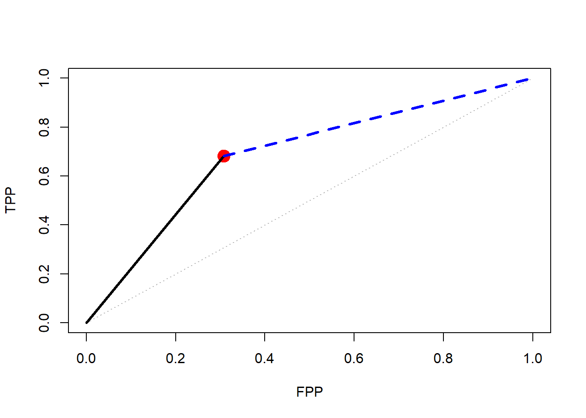
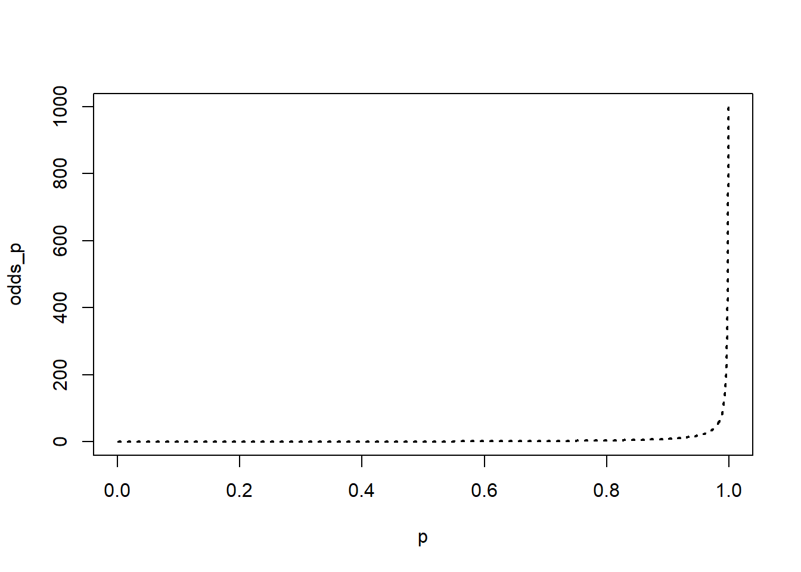
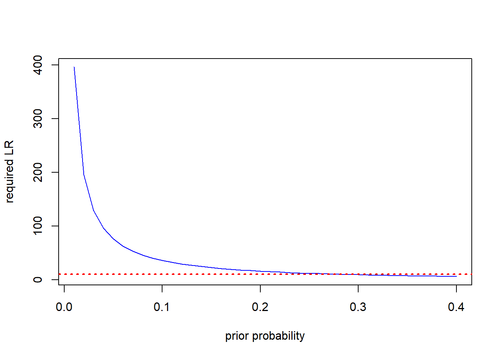

Information theory workshop II
The basics of Bayesian probability updating with uncertain messages
In the introductory section of the workshop we looked at some basic information theory quantities and their relationship with probabilities. All of the examples assumed that a definite message would be available about uncertain events, so that after receipt of the message no uncertainty as to the outcome of the event would remain. With modern diagnostic methods in a laboratory setting we can often approach certainty with diagnosis, which is equivalent to receipt of a definite message. In the field diagnosis is much less often completely certain, and disease forecasting almost never is. In these cases we are dealing with uncertain messages and the best we can do is update a prior belief about the probable events to a posterior belief in light of the (uncertain) evidence.
Information Content of a Message
The information content of uncertain messages is found by generalizing the equation for the information content of a definite message given in the previous section; for an indefinite message, the information content is:\[ information = log\left(\frac{Pr(\text{after message received})}{Pr(\text{before message received})}\right)\] Returning to the example given in the first section, following Hughes (2012), suppose we receive a message (in the form of a an uncertain forecast), \(T_{1}\) that disease state, \(D_{1}\) will occur. The information content of this message is:\[ h(D_{1}|T_{1})=log\left(\frac{Pr(D_{1}|T_{1})}{Pr(D_{1})} \right)\] \[=log(Pr(D_{1}|T_{1})-log(Pr(D_{1}))\] \[= h(Pr(D_{1}))-h(Pr(D_{1}|T_{1}))\] This says the information content of the indefinite message, \(T_{1}\) that disease state \(D_{1}\) has occurred is the difference in log probabilities before and afer receipt of the message, and since (as we now know) log probabilities are information, this is equivalent to saying that the information in a message about an event is simply the difference in the information you have before the message and after you receive it. This introduces the question of how to change ( i.e. update) probabilities based on information? To answer that question we need a brief introduction to Bayesian analysis in the context of forecasting.
Case Study: Spinach Downy Mildew
To introduce the concept of Bayesian updating we will use a small set of data from a study on the epidemiology of downy mildew of spinach conducted by Choudhury et al. (2016), that will be featured in later sections of the workshop. Briefly, the data come from observations on the abundance of pathogen DNA on spinning arm spore traps and subsequent development of disease. The authors looked at various threshold DNA levels and prediction intervals and one combination resulted in the following set of data: - number of observations: N = 83 - number of observations in which disease developed (cases) = 44 - number of observations in which no disease developed (non-cases) = 39 - number of cases predicted to have disease = 30 - number of cases predicted to have no disease = 14 - number of non-cases predicted to have no disease = 27 - numner of non-cases predicted to have disease = 12
Sensitivity and Specificity
From these numbers we can calculate the True Positive Proportion (also known as the sensitivity) as 30/44 = 0.6818 and the True Negative Proportion (also known as the specificity) as 27/39 = 0.6923.
The TPP is an estimate of the conditional probability of getting a prediction of disease, given that disease actually does occur, that is \(Pr(T_{c}|D_{c})\). Specificity is an estimate of the conditional probability of getting a prediction of no disease given that disease actually does not occur, that is \(Pr(T_{nc}|D_{nc})\). Note that the False Postive Proportion, FPP, is 1- specificity and is an estimate of \(Pr(T{c}|D_{nc})\).
Likelihood Ratios
With the results avaiable for the predictions and outcomes we can calculate the likelihood ratios (LR) for the predictions. Considering both cases and non-cases, for a binary test and two outcome categories there are 4 LR’s in all. For now, we will focus on the the LR associated with positive predictions of disease, \(LR_{c}\): \[ LR_{c}= \frac{Pr(T{c}|D_{c})}{Pr(T_{c}|D_{nc})}= \frac{TPP}{FPP}\] Note that the conditionality in the probability terms in the \(LR_{c}\) is such that they express the chances of obtaining a positive prediction of disease given that the disease status of the test subject is known to be a case or a non-case. what we would like to know, for the purposes of disease prediction, is the probability with the conditionality reversed; i.e. \(Pr(D_{*}|T_{*})\); Bayesian updating achieves the switching of the conitionality while also updating the prior probability of the disease status of the test subject in light of the information contained in the forecast.
The updating process is easier if we work in odds rather than probabilities. As a reminder, for any event, \(E\) which occurs with probabiity \(Pr(E)\), the odds of \(E\) are\[ odds(E)= \frac{Pr(E)}{1-Pr(E)}\] The corresponding transformation in the opposite direction is given by:\[ Pr(E)= \frac{odds(E)}{1+odds(E)}\]
Suppose we use the spore trap/DNA detection system for an area where we have an existing estimate of the odds of downy mildew, \(odds(D_{c})\). The trap returns a prediction of disease, based on the pathogen DNA level, \(T_{c}\). According to Bayes theorem, the corresponding odds of disease given the prediction are: \[ odds(D_{c}|T_{c})=odds(D_{c}) \times LR_{c}\] Taking logarithms of this results in:
\[ log\left(odds(D_{c}|T_{c}) \right) = log\left( odds(D_{c}\right) +log \left(LR_{c} \right) \]
Recalling that the \(odds()\) are all ratios of probabilities, as is the \(LR\), and that we have already encountered the logarithms of ratios of probabilities in calculations of information quantities, you may be already seeing the Bayesian upadating equation in terms of information. To make it more explicit what the \(LR\) is in information terms we can expand the previous equation and express it in terms of the probabilities involved as:
\[ log(Pr(D_{c}|T_{c}))-log(1-Pr(D_{c}|T_{c})) = log(Pr(D_{c}))-log(1-Pr(D_{c}))+log(Pr(T_{c}|D_{c}))-log(Pr(T_{c}|D_{nc})) \] The following code illustrates some of the concepts just introduced.
#Copy the information from the downy mildew example
TP<-30
FN<-14
TN<-27
FP<-12
cases<-TP+FN
non_cases<-TN+FP
TPP<-TP/cases
FPP<-FP/non_cases
TPP; FPP## [1] 0.6818182## [1] 0.3076923# Make a LR graph to see what the performance looks like in "ROC" space
FPvals<-c(0,0.25,0.5,0.75,1)
TPvals<-c(0,0.25,0.5,0.75,1)
LRpos_x<-c(0,FPP)
LRpos_y<-c(0,TPP)
LRneg_x<-c(FPP,1)
LRneg_y<-c(TPP,1)
plot(FPvals,TPvals, ty="l", col="grey", lty=3, xlab="FPP", ylab="TPP",
xlim=c(0,1), ylim=c(0,1))
points(FPP,TPP, col="red", pch=19, cex=2)
lines(LRpos_x,LRpos_y, lty=1, lwd=3, col="black")
lines(LRneg_x,LRneg_y, lty=2, lwd=3, col="blue")
Questions
In the graph, what quantities do the slopes of the black and blue lines represent? For the blue line, what is the expression for the conditional probability corresponding to the slope?
p<-seq(0.001,0.999,0.001)
odds_p<-p/(1-p)
priors<-c(0.05,0.1,0.25,0.5,0.75,0.8)
plot(p,odds_p, ty="l", lwd=2, lty=3) ###Relationship Between Odds and Probability The plot shows us what the relationship between probability and odds looks like, but because the odds values cross orders of magnitude it’s a bit difficult to see what is happening at the low end of the scale; taking logs reveals an interesting relationship.
log_odds_p<-log(odds_p)
prior_odds<-priors/(1-priors)
log_prior_odds<-log(prior_odds)
LR_c<-TPP/FPP # We calculate the positive LR from the downy mildew example
log_LR_c<-log(LR_c)
log_posterior_odds<-log_prior_odds+log_LR_c # This line implements the updating in log(odds) format
posterior_odds<-exp(log_posterior_odds) # exponentiate to recover the odds
posteriors<-posterior_odds/(1+posterior_odds) # back calculate the probabilities from the odds
plot(p,log_odds_p, ty="l", lwd=2, lty=3, xlab="probability of disease",
ylab="log odds of disease")
points(priors,log_prior_odds, pch=19, col="blue", cex=1.5)
points(posteriors,log_posterior_odds, pch=21, col="red", cex=2)
The Relationship Between Priors and Posteriors
In the previous figure we can see that the impact of the \(LR\) on the prior changes with the prior; this is apparent from the equation, but at the same time perhaps surprising the first time we encounter the results. Thinking about the updating process informally helps to see what is happening with the formal analysis. When the prior is very low, the message that disease is forecast contains a large amount of information, but the low prior means that the posterior still isn’t very high. At the opposite end of the probability scale, the message that disease is forecast contains very little information and so the posterior is not very different from the prior. In the middle of the probability scale there is maximum uncertainty prior to receipt of the message and so the information in the \(LR\) has a big impact.
We can use the Bayesian updating equation to specify how much information the \(LR\) would need to contain in order to produce a given posterior from different prior values. Re-arranging the Bayesian updating equation we can write:\[ log\left(LR_{*}\right) = log\left(odds(D_{*}|T_{*})\right)-log\left(odds(D_{*})\right)\]
Challenges of a Disease Forecaster
“Predictions are hard, especially about the future - Yogi Berra”
Suppose we are considering deploying a disease forecaster with group of growers in a situation where they are confronting a new disease problem, which has not previously needed action. The available treatments are relatively expensive and the diseasee occurs sporadically. We do some discussion sessions with the growers and the consensus is that if the probability of disease is 80% or higher, they would be willing to invest in treatments. The discssions also reveal that, not unexpectedly, there is a range of opinion about the probability that disease will occur in any given season. A little further elicitation work reveals that the priors aming the growers range from 0.01 to 0.4. The following code chunk shows how to work out the \(LR\) needed to move that range of priors to a posterior of 0.8.
low_priors<-seq(0.01,0.4,0.01)
low_prior_odds<-(low_priors)/(1-low_priors)
log_low_odds<-log(low_prior_odds)
req_posterior<-0.8
req_posterior_odds<-req_posterior/(1-req_posterior)
log_req_odds<-log(req_posterior_odds)
log_req_LR<-log_req_odds-log_low_odds
req_LR<-exp(log_req_LR)
plot(low_priors,req_LR, ty="l", col="blue", lty=1, xlab="prior probability", ylab="required LR")
abline(h=10, col="red", lty=3, lwd=2) The horizontal dashed line in the figure is drawn at \(LR=10\). All the prior values to the left of the intersection between the horizontal line and the LR curve would not reach the posterior probabilty of 0.8 required to trigger treatment. To put this in perspective, very few (if any) current disease forecasters based on typical risk factors have a positive LR as high as 10; they literally do not contain enough information to achieve the required effect in a single interaction with users in that range of priors.
Exercises
- If you have developed a forecaster and characterized it in terms of its LR’s carry out an analysis like the one above to explore the range of priors it will be likely to reach.
- How would you go about the corresponding analysis where the user-base has generally high priors and your forecaster is mainly intended to show situations where treatments are not required in an effort to reduce pesticide use.